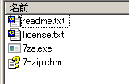
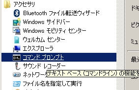
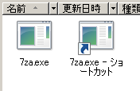
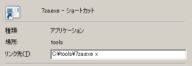
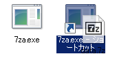
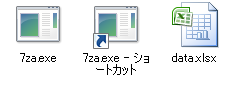

インストール不要のZIP、7z、RARファイルの解凍方法
.zip、.7z、.rarなどの圧縮ファイルを解凍（展開）をするとき、Windowsの管理者権限がなかったり、レジストリに何も書かれたくないなどの理由によって、ソフトウェアのインストールをしたくない場合は、いくつかの方法があります。
コマンドライン版を使う方法
もっとも簡単なのは7-Zipのコマンドライン版を使う方法です。ただし、コマンドライン版が対応しているのは、主要な形式である、
圧縮、解凍：7z、xz、ZIP、GZIP、BZIP2、TAR
解凍のみ：Z、lzma
になります。
手順としてはまず、「ダウンロード」のページから「7-Zip コマンドラインバージョン」を選択してファイルをダウンロードします。ファイル名は、
7za<バージョン番号>.zip
のようになっています。これをダウンロードしたら、適当なフォルダに解凍します。ZIP形式になっていますが、Windows標準の機能だけでも解凍できます。ZIPファイルに含まれるのは以下のファイルです。
この中の7za.exeファイルだけで、圧縮や解凍が行えます。
コマンドプロンプトで解凍
素直な利用方法としては、コマンドプロンプトを起動して、そこで操作する方法です。 7za.exeファイルがC:\toolsにあるとして、圧縮ファイルdata.7zがC:\downloadsにあるとします。 この状態で「アクセサリ」－「コマンドプロンプト」を起動します。
コマンドプロンプトが起動したら、C:\downloadsに移動し、7za.exeを起動します。
cd c:\downloads c:\tools\7za.exe x data.7z 7-Zip (A) 9.20 Copyright (c) 1999-2010 Igor Pavlov 2010-11-18 Processing archive: data.7z Extracting data.xlsx Everything is Ok Size: 17525 Compressed: 14769
このようにして、圧縮ファイルから元のファイルを取り出せます。7za.exeの後ろに付けた「x」はeXtract（取り出し、展開）しろという命令です。「e」もしくは「x」で解凍されますが、「x」の場合は圧縮ファイル中に記録されているパス名も付けて解凍します。
ショートカットでドラッグ＆ドロップで解凍
Windowsのショートカット機能を利用して、ドラッグ＆ドロップで解凍できるようにする方法もあります。7za.exeファイルがC:\toolsにあるとしたら、toolsフォルダを開き、右クリックから「ショートカットの作成」を選択します。
次に矢印の付いた「7za.exe - ショートカット」を右クリックして「プロパティ」を選択します。表示される画面で、「リンク先」の部分で、行末にスペースを1つ入れて「x」を追加します。
これでこのショートカットは常に「7za.exe x」が実行されるアイコンになります。後はこのショートカットに圧縮ファイルdata.7zなどをドラッグ＆ドロップすれば、このショートカットアイコンのある場所に解凍されるようになります。
↓
通常版に含まれるコマンド版を使う方法
通常の7-Zipには、GUIの7-Zip File Manegerのほかに、同等の機能を持ったコマンドライン版も含まれています。コマンドライン版として配布されている7za.exeはこの1ファイルだけで実行できますが、主要な形式のみの対応となります。一方で通常版に含まれる7z.exeは7z.dllとともに実行することでフル機能になります。RARの解凍が必要な場合はこちらを使う必要があります。
7z.exeファイルと7z.dllファイルは、7-Zipがインストールされている環境のC:\Program Files\7-Zipフォルダ内や、PortableAppsの7-Zipにあります。それらの環境があれば、この2つのファイルを任意のディレクトリにコピーしてくれば作業環境が整います。
近くに7-Zipが導入された環境がなければ、バージョン9.20なら、このサイトの7z.exeと7z.dllからダウンロード可能です。
7z.exeと7z.dllファイルをC:\toolsフォルダに置いたら、あとは解凍したいファイルを指定して実行するだけです。
cd c:\downloads c:\tools\7z.exe x data.rar 7-Zip 9.20 Copyright (c) 1999-2010 Igor Pavlov 2010-11-18 Processing archive: data.rar Extracting data.xlsx Everything is Ok Size: 17525 Compressed: 14700
7z.exeコマンドも7za.exeコマンドも使い方は同じです。
OSDN Project